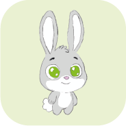
HOPI is a conceptual mobile app focused on promoting physical activity in children through
The project combines sports, games, and daily tracking to encourage healthy habits from an early age, engaging both children and parents in a friendly and motivating visual environment.
PROBLEMS
Today, many children spend most of their day in sedentary activities, with little motivation to engage in regular physical exercise.
For parents, it is often challenging to encourage healthy habits consistently, especially without digital tools that are both educational, engaging, and easy to monitor.
SOLUTION
The proposed solution is the creation of a mobile app that turns physical activity into a fun and accessible experience for children.
Through games, daily challenges, and a visual progress system, the app encourages consistent movement while providing parents with a clear overview of their children’s daily activity.
OBJECTIVE
The main goal of HOPI is to promote healthy habits from an early age, using play and visual motivation as core tools.
The app aims to balance fun and learning, helping children stay active while allowing parents to easily and intuitively track their progress.
CREATIVE PROCESS
The development of HOPI followed a structured design process focused on creating an engaging and motivating experience for children while ensuring usability for parents.
From research and concept development to character creation, user flows, wireframes, and final interface design, each stage was carefully planned to support the project's objectives.
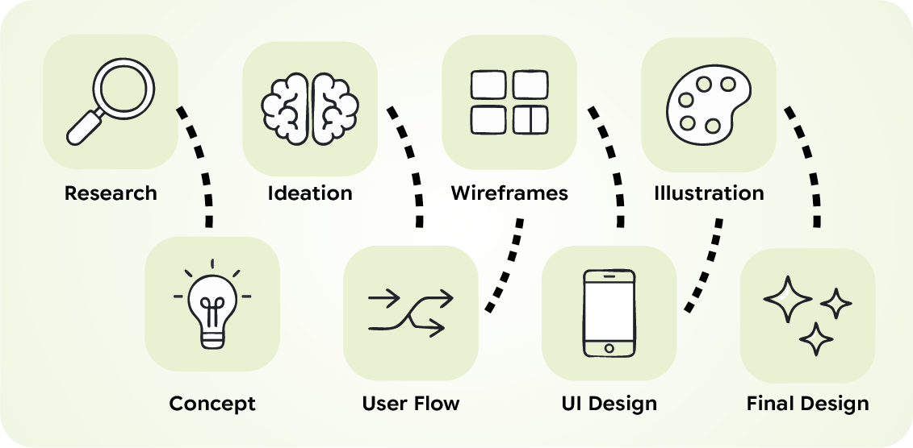
HOPI was designed for school-age children who are developing habits related to physical activity and well-being.
The app also considers parents or guardians as indirect users, providing simple tools to monitor daily progress and encourage a more active routine.
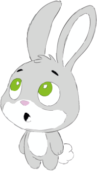
Lucas, 8 Active, curious, and competitive child who enjoys games and visual challenges.
Goals
Play while exercising
Unlock levels and rewards
Feel progress and achievement
Pain
Loses interest easily
Prefers games over traditional exercise
Needs constant motivation
How HOPI Helps
Turns sports into games
Uses visual progression and challenges
Motivates through the mascot and rewards
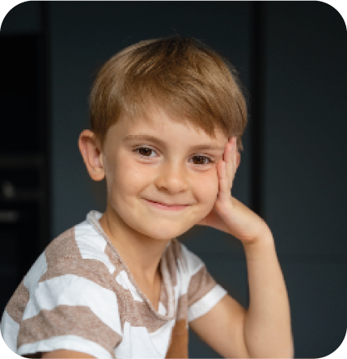
Maria, 36 Busy parent who wants to encourage healthy habits while easily monitoring her child's progress.
Goals
Promote healthy habits
Monitor daily activity
Encourage consistency
Pain
Lack of time
Difficulty motivating children
Limited monitoring tools
How HOPI Helps
Progress tracking
Daily reports
Reward-based motivation
HOPI's visual identity was designed to be friendly, energetic, and accessible to children, while remaining clear and readable for parents.
The color palette is based on green and orange, conveying movement, health, and positive energy.
Typography was selected to ensure readability and a relaxed tone, while illustrations and graphic elements reinforce the playful and educational nature of the app.
BANGERS
REGULAR
ABCDEFGHIJKLMNOPQRSTUVWXYZ
1234567890
Google Sans Flex 9pt
ABCDEFGHIJKLMNOPQRSTUVWXYZ
abcdefghijklmnopqrstuvwxyz
1234567890
The app icon features Hopi, the main mascot, placed on a green background to reinforce the connection to movement, health, and positive energy.
The simple and expressive design ensures easy recognition on the home screen, creating an immediate connection with the young audience.
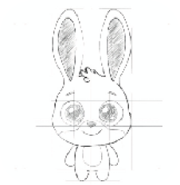
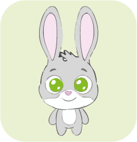
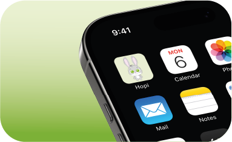
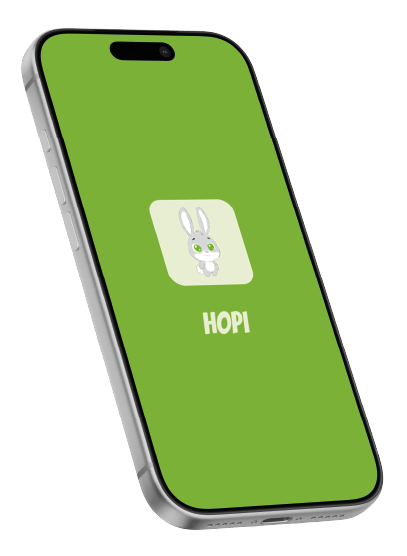
Hopi was chosen as the mascot for representing energy, agility, and movement — qualities naturally associated with sports.
The rabbit character creates an immediate connection with the children's universe, conveying friendliness, approachability, and motivation.
Throughout the app, Hopi accompanies children in different activities, reinforcing positive encouragement and making the overall experience engaging and fun.
Hopi is a rabbit character illustrated with simple shapes and soft colors, designed to convey friendliness and accessibility.
The character was created to adapt to different contexts within the app while remaining easily recognizable.
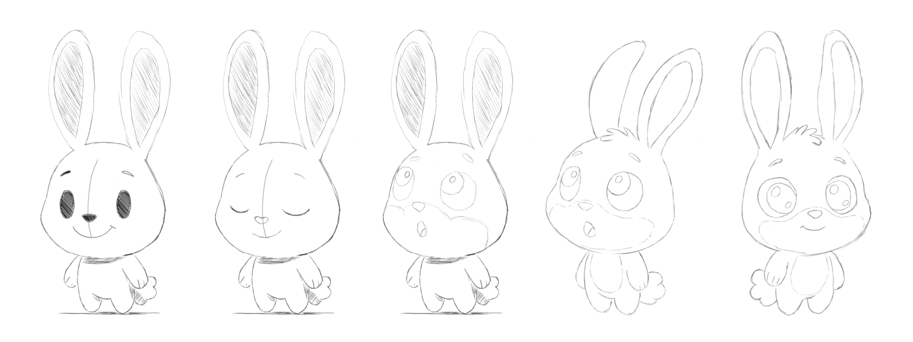

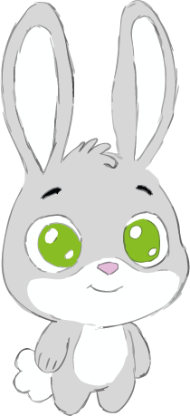
Hopi is a rabbit character illustrated with simple shapes and soft colors, designed to convey friendliness and accessibility.
The character was created to adapt to different contexts within the app while remaining easily recognizable.
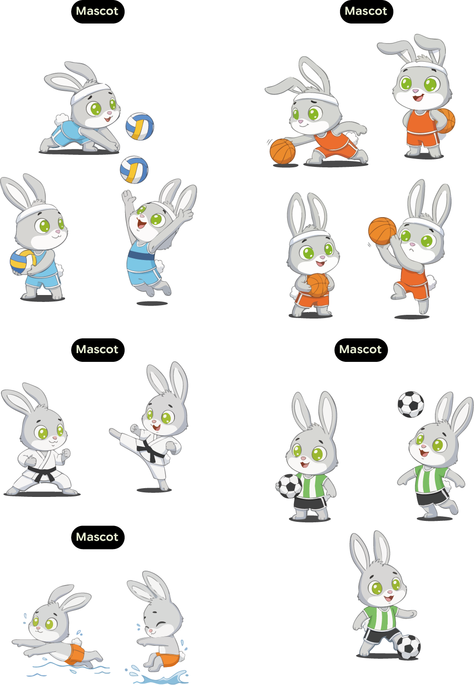
HOPI's structure was designed to be simple and intuitive, allowing children to easily navigate through the app's main sections.
The navigation flow was designed to ensure a simple and intuitive experience, allowing children to quickly access activities, games, and daily progress.
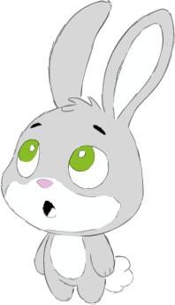
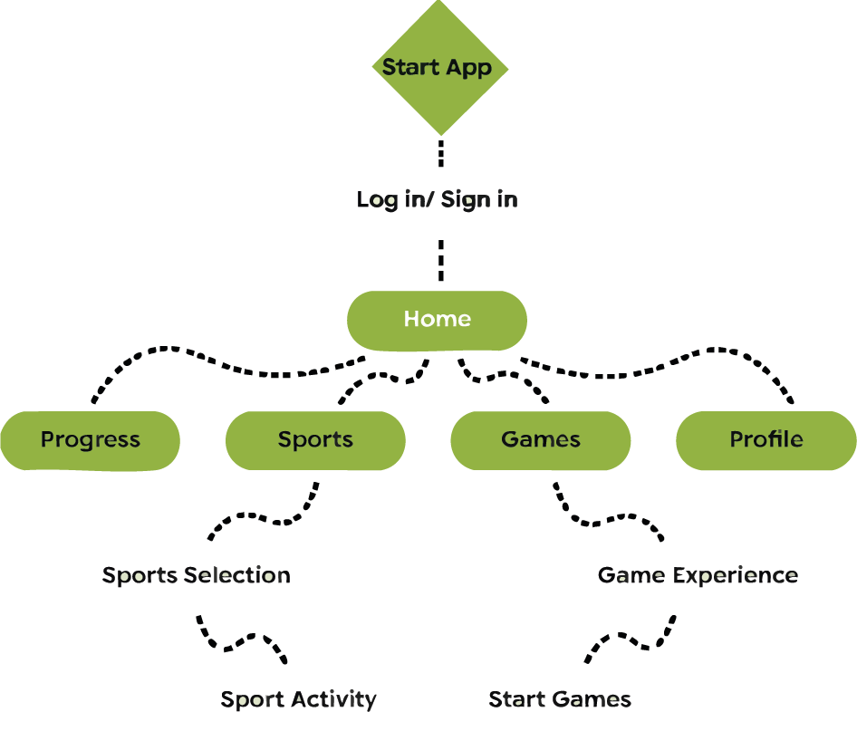
SPLASH & ONBOARDING
The first interaction with HOPI was designed to be simple, welcoming, and visually clear.
The splash screen introduces the app’s identity through the mascot and primary color, creating an immediate connection with the children's universe.
The onboarding flow then guides users intuitively through the introduction and account access, ensuring a smooth entry into the experience.


HOME
The Home screen acts as the central hub of the HOPI experience, bringing together daily progress, available sports, and active games in a single view.
Through simple visual indicators, children can easily track their activity while maintaining motivation.


PROGRESS
The Progress section allows users to track daily physical activity in a clear and motivating way.
Visual moments featuring the mascot reinforce positive encouragement and make progress tracking more engaging.
SPORTS
The Sports section allows users to explore different activities in a simple and visual way.
Throughout the activities, the mascot accompanies the user, reinforcing engagement and celebrating achievements with positive feedback.


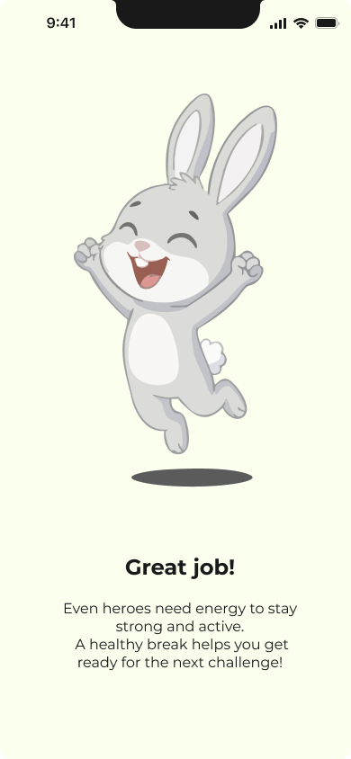


GAMES
The Games section turns physical activity into a playful and motivating experience.
Visual progression and unlockable challenges reinforce a sense of achievement and continuous growth.
PROFILE
The Profile section allows users to manage their personal information and customize their experience.
The simple structure ensures clarity and control while remaining accessible for both children and parents.


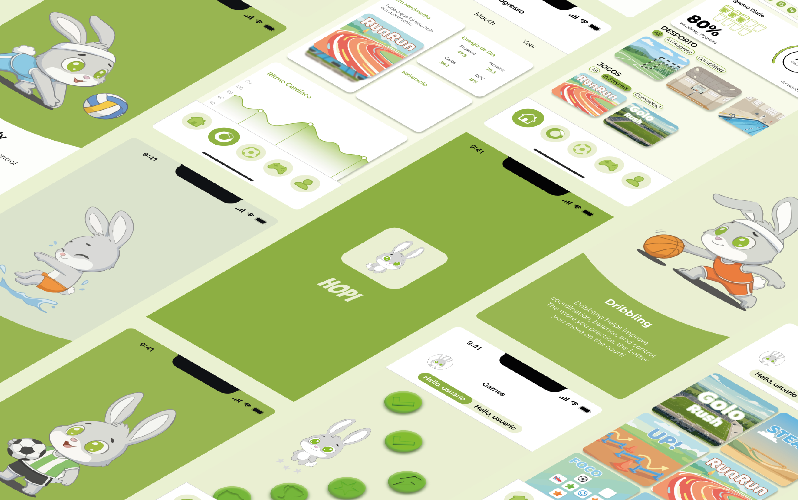